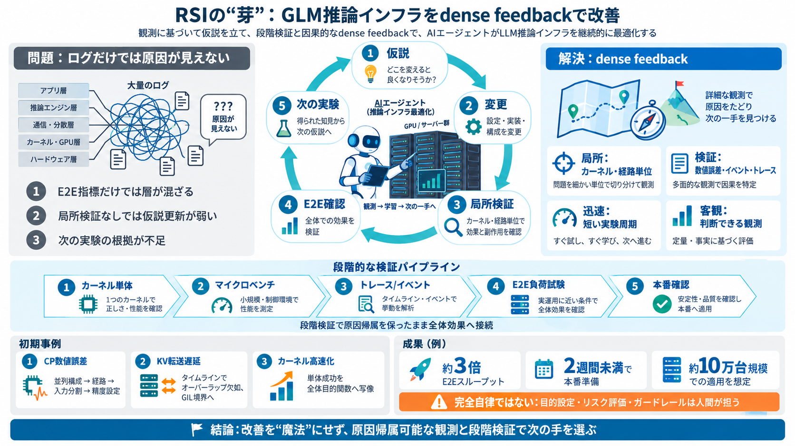

GLM-5.3-Flash - Overview - Z.AI DEVELOPER DOCUMENT
Over the past week, we have served GLM-5.3-Flash on a large-scale cluster of Chinese AI chips, supported by a high-bandw…

巨大言語モデルの推論インフラ（GPU運用・メモリ・並列化・通信・監視）を、AIエージェントが実験と検証で改善していく初期事例を要約します。
エンドツーエンドの指標だけ（TTFT・スループット等）だと、どの層（カーネル実装、並列戦略、通信、メモリ、オーケストレーション）が原因か特定できません。
量の多さではなく、「安価・迅速・局所・客観検証」で、観測が“どの変更の効果か”結び付く設計が鍵です。
カーネル単体テスト→マイクロベンチ→実行トレース/ランタイムイベント→エンドツーエンド負荷試験を段階的に組み、必要に応じて本番確認へ接続します。
CP（Context Parallelism）経路の数値誤差は、並列構成→実行されるカーネル経路→入力分割→精度設定（TF32/FP32等）まで対応付けて原因を特定しました。
KV転送が想定より大幅に遅いとき、タイムラインから「GPU計算とオーバーラップできていない」と判断し、Python/C++境界でのGIL解放不足が原因だと結び付けました。
カーネル単体を速くしても、パイプライン全体では遅くなることがあります。そこで「最適化スケルトン（適用条件・制約・根拠）」を抽出し、層状の検証でエンドツーエンド効果を確認しました。
推論最適化は「速い」だけでなく、正確性（Correctness）、安定性（Performanceの安定）、本番で出るエンドツーエンド効果の同時達成が必要です。
GLM-5.3-Flashの本番推論サービスを約10万台規模の中国製AIアクセラレータ上で新規構築し、段階最適化とフィードバックループで生産準備に到達しました。
目的設定・境界設定・リスク評価は人間が担うべきで、この記事の範囲では無制限な自己改善が自動的に到達するわけではないと明確に述べています。
dense feedbackの強みは「局所で早く誤りを排除し、トレースで並行性を特定し、最後にエンドツーエンドで受け入れる」分界の明確さです。一方で、一般化・コスト・因果分解・安全メカニズムの詳細が読み取りにくい点が課題です。
RSIへ向かう初期実装として、重要なのは「改善」を魔法にせず、原因帰属可能な観測設計と段階検証で次の手を選べる状態にすることです。
Over the past week, we have served GLM-5.3-Flash on a large-scale cluster of Chinese AI chips, supported by a high-bandw…
Framework support is broad. Z.ai lists SGLang, vLLM, Transformers, KTransformers, TokenSpeed, and Unsloth as supported i…
As model self-improvement loops ramp up within the labs building LLMs, if any of these feedback loops require user data,…
### Description 15,477 views Posted: 2026-08-28 [...] When Chinese AI lab Z.ai launched GLM-5.3-Flash, they released a 3…
2026 BEPICOLOMBO — ESA/JAXA CRUISER · ARRIVES NOVEMBER 2026 S S S - 0 8 · S O L A R S Y S T E M S U R V E Y S H E E T …